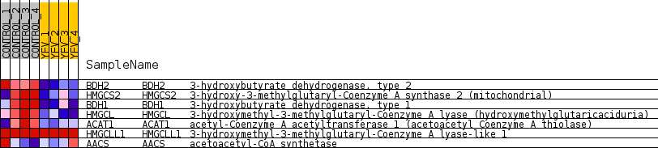
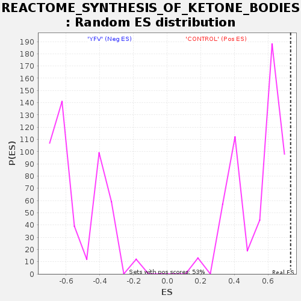

Profile of the Running ES Score & Positions of GeneSet Members on the Rank Ordered List
| Dataset | MATRIZ_GSE99081_collapsed_to_symbols.gsea_CLASE_99081.cls#CONTROL_versus_YFV |
| Phenotype | gsea_CLASE_99081.cls#CONTROL_versus_YFV |
| Upregulated in class | CONTROL |
| GeneSet | REACTOME_SYNTHESIS_OF_KETONE_BODIES |
| Enrichment Score (ES) | 0.73341554 |
| Normalized Enrichment Score (NES) | 1.3763498 |
| Nominal p-value | 0.0 |
| FDR q-value | 0.99207616 |
| FWER p-Value | 1.0 |
| SYMBOL | TITLE | RANK IN GENE LIST | RANK METRIC SCORE | RUNNING ES | CORE ENRICHMENT | |
|---|---|---|---|---|---|---|
| 1 | BDH2 | 3-hydroxybutyrate dehydrogenase, type 2 | 807 | 0.701 | 0.2380 | Yes |
| 2 | HMGCS2 | 3-hydroxy-3-methylglutaryl-Coenzyme A synthase 2 (mitochondrial) | 1008 | 0.642 | 0.4892 | Yes |
| 3 | BDH1 | 3-hydroxybutyrate dehydrogenase, type 1 | 1131 | 0.613 | 0.7334 | Yes |
| 4 | HMGCL | 3-hydroxymethyl-3-methylglutaryl-Coenzyme A lyase (hydroxymethylglutaricaciduria) | 3591 | 0.279 | 0.6965 | No |
| 5 | ACAT1 | acetyl-Coenzyme A acetyltransferase 1 (acetoacetyl Coenzyme A thiolase) | 4925 | 0.165 | 0.6820 | No |
| 6 | HMGCLL1 | 3-hydroxymethyl-3-methylglutaryl-Coenzyme A lyase-like 1 | 7774 | 0.000 | 0.5065 | No |
| 7 | AACS | acetoacetyl-CoA synthetase | 10186 | -0.036 | 0.3729 | No |

